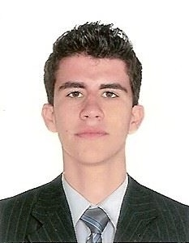

" width="200" height="200" />
- Ensino médio: Colégio Sesi-PR (conclusão em 2013)
- Ensino superior: Universidade Norte do Paraná (UNOPAR):
Cursando Análise e Desenvolvimento de Sistemas (conclusão em junho/2019)
Carta de referência e Certificado de Honra ao Mérito do Exército Brasileiro
- Cursos concluídos pela plataforma DevMedia:
Java OO, Php OO
- Cursos concluídos pela plataforma CursoEmVideo:
Algoritmos, HTML5 & CSS3, Java, MySQL, Word